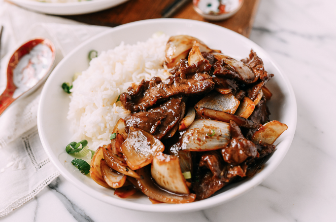

Onion Beef Stir Fry

Descriptions
Chinese Onion Beef Stir Fry is a flavorful and easy-to-make dish that combines tender strips of beef with garlic, onions, scallions, and a savory soy sauce-based sauce. The beef is sliced into thin strips and coated in cornstarch before being quickly stir-fried in a wok or skillet until browned and cooked through.
Ingredients
- 1 lb beef flank steak, sliced into thin strips
- 1 tablespoon cornstarch
- 2 tablespoons vegetable oil
- 4 cloves garlic, minced
- 1/2 cup sliced onion
- 1/2 cup sliced scallions (green onions)
- 1/4 cup soy sauce
- 1 tablespoon brown sugar
- 1 tablespoon sesame oil
- Salt and pepper to taste
- Steamed rice, for serving
Instructions
- In a medium bowl, mix together the beef strips and cornstarch until the beef is evenly coated.
- Heat the vegetable oil in a wok or large skillet over high heat. Add the beef strips to the pan and stir-fry for 2-3 minutes, until browned on all sides.
- Remove the beef from the pan and set it aside on a plate.
- Add the garlic, onion, and scallions to the pan and stir-fry for 2-3 minutes, until the vegetables are softened.
- Add the soy sauce, brown sugar, and sesame oil to the pan and stir to combine.
- Return the beef to the pan and stir-fry for another 1-2 minutes, until the beef is coated in the sauce and heated through.
- Season with salt and pepper to taste.
- Serve the Chinese Onion Beef Stir Fry over steamed rice. Enjoy!